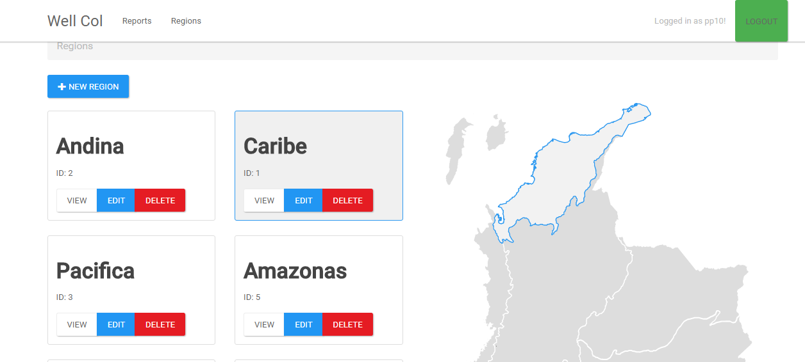
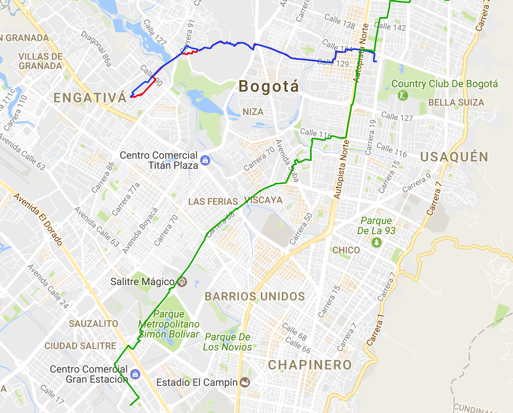
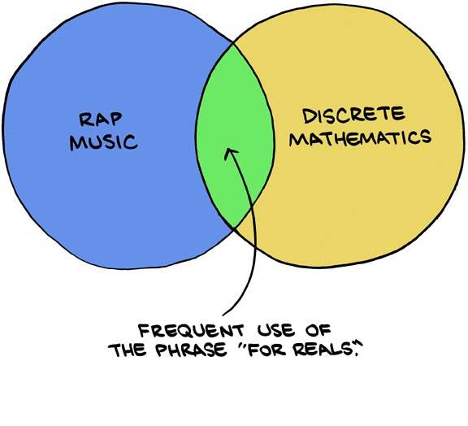
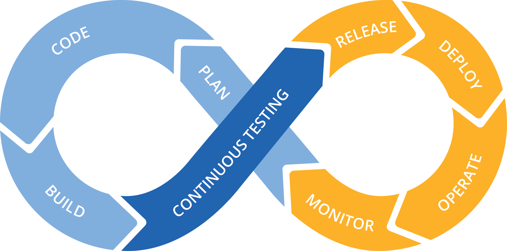
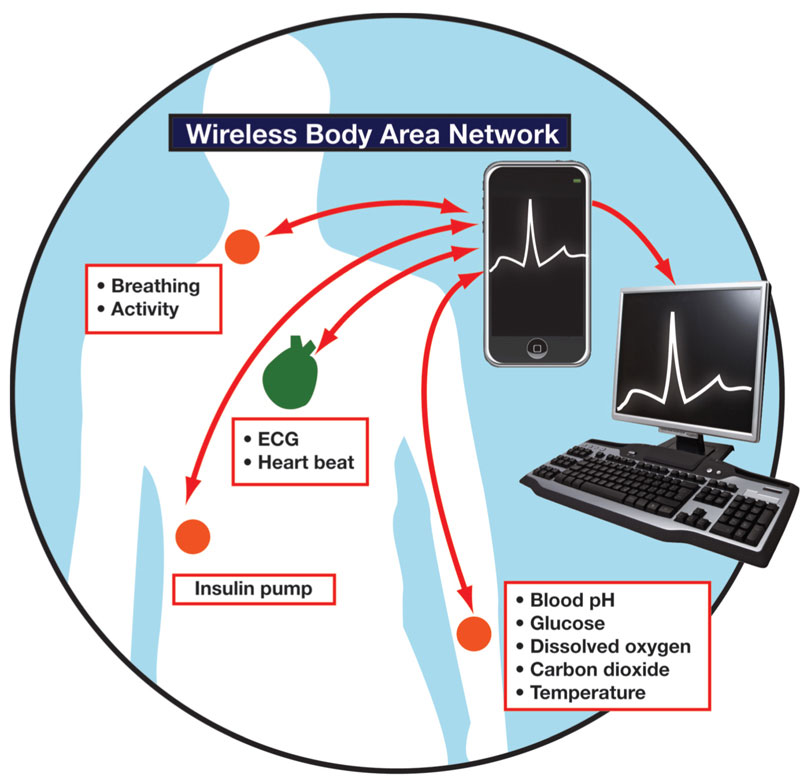

I'm David! Here is my resume.
I'm a junior at Universidad de los Andes studying Systems and Computing Engineering.
I really enjoy solving problems and the beauty of a good explanation. I think that is why I love to teach anything
I know. For know, I mostly teach Mathematics, Physics and Computer Programming.
I also believe that we, who understand technology and push it forward, should work to improve the world, not make it worse. Let everything we do
be transparent and full of goodness. Protect people and their rights; Do not take advantage.
What I know and have worked with
The programming language I know better is Java
As my projects usually have a web interface, I have worked with HTML, CSS and Javascript
Last year I used Node.js and Express for a big project
I have played with Python and Ruby in small tasks
Regarding Databases, I have worked with Oracle11g, PostgreSQL and I am currently using MongoDB for a couple projects
Currently learning
This semester I am taking courses on Computer networking, Web Development and also a course called Modeling, Simulations and OptimizationBest semester ever!
Projects
WellCol

(2016) - Team project
Application for storing information and monitoring emergencies a petroleum wells network.
The main objective for this project was to implement client requirements taking into account
quality attributes such as usability, performance, reliability, and security.
We made use of load balancers such as Nginx in order to guarantee availability
and also applied design patters such as Factory Method and Proxy to reach the desired levels of coupling and cohesion in
the source code.
In addition, we implemented an API that allowed communication with real sensors measuring data using NodeRED.
Technologies used: NodeJS, Express, PostreSQL and Angular. We developed a client for Android and iOS.
Web application that allows users to plan your holidays. Users can create schedules, stops and events.
Our main goal was to learn how to make a simple application that exposed a well designed RESTFUL API.
As our secondary goal was to design a good system that modeled in the best possible way one to one, one to many, many to one
and many to many relationships
We made use of a object relational database and and JPA for persistence
Technologies used: Java EE, AngularJS
Technical debt of the project during its duration
Sonarqube summary 1
Sonarqube summary 2
Snapshot of API from Postman
CCT

(2015) - Team project
Application for finding shortest/cheapest/ routes for package delivery in Bogotá, Colombia using shortest path, Dijkstra and other graph algorithms.
The program saved the most efficient route in a file and also was able to draw it upon Google Maps
In order to increase the efficiency of our program we reimplemented the algorithms usind redundancy of data structures to make the operations as efficient as possible. Of course, we traded space for time complexity. This resulted in our program being at least 10x faster than other applications for certain searches.
This application was made using pure Java.
Puerto Andes
(2015) - Team project
Application for storage, management and analysis of a port network. The application was able to handle many types of transactions
regarding the multiple agents in a port such as: customers, ships, containers, workers, employees, employers, traders, etc.
At the end of the project our database had tables with more than 2 million rows. All this data was proccesed and worked
by the implementation of a efficent database schema that used good design and indexes to make faster searches and also
efficient in memory algorithms when necessary
We also exposed all of this functionalities through a RESTFUL API.
I began college at the University of the Andes in the second semester thanks to MINTIC scholarship
2014 Fall - 2015 Spring
I really enjoyed my first 2 programming classes: Object Oriented Programming and Algorithms I and II. I got the best grade in both of them and learned a lot!
2015 Spring

I was teacher Assistant for the Discrete Mathematics course here at Uniandes. It was great to teach and help students just like in highschool!
2015 Spring
Programming Teacher at Cupitaller ! The place where students come to learn about OOP in Java Programming Teacher at Cupitaller! The place where students come to learn about OOP in Java
2015
My both hard and enlightning encounter with indian philosophy
2015 Fall
Learned Data Structures and completely loved them. At the end I built app
to calculate shortest paths of delivery for a company in Bogotá, Colombia.
2016 Spring
Took Transactional Systems, where I learned how to integrate a database with millions
of entries with an application for managing operations in a real-worls port. Also I
took Software Development in Teams where I learned the importance and value of automating
testing and deployment together with good team organization practices.
2016 Summer

Took Introduction to DevOps by Microsoft of edx. During the spring semester I realized that delivering software is not as
simple as you might think. You need continuous integration of the people involved in the project. The thing is, this is not
achieved easily, you need a culture and tools to support that culture. DevOps is one of the solutions to that.
2016 Fall
Software Arquitecture is here! Learned about Security, performance, avaliability and usability.
Modern design patters and arquitectures used in the biggest companies were practiced in labs and in the class
project: wellcol.
2017 Spring

Professor Sandra Rueda invited me to
join her one of her PhD students as a research assistant in the development of a secure arquitecture and protocols for communication between
nodes in Wireless Body Area Networks (WBAN)